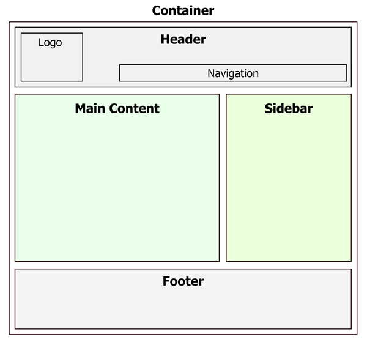

some item
another item
fist item
second item
I'm a paragraph
I'm the biggest title
I'm the middle titles
I'm the smallest title
I'm a link that works as F5 refresh page
I'm a link that forbidding to refresh this page